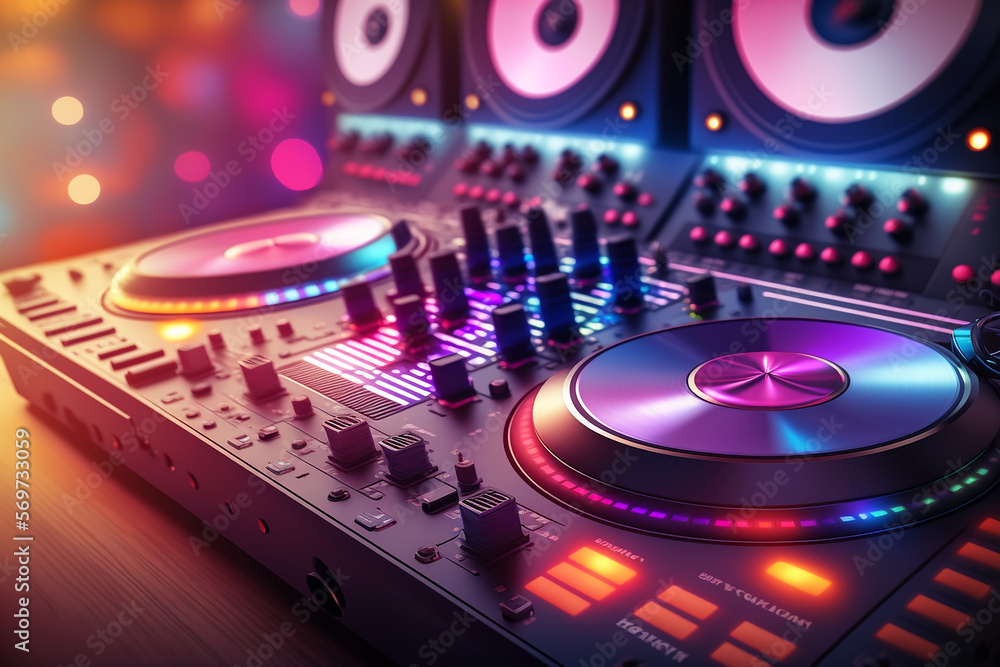
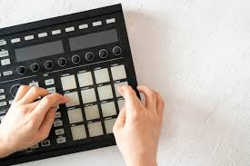
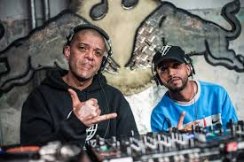
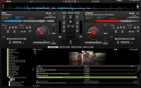
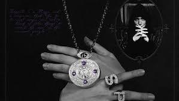
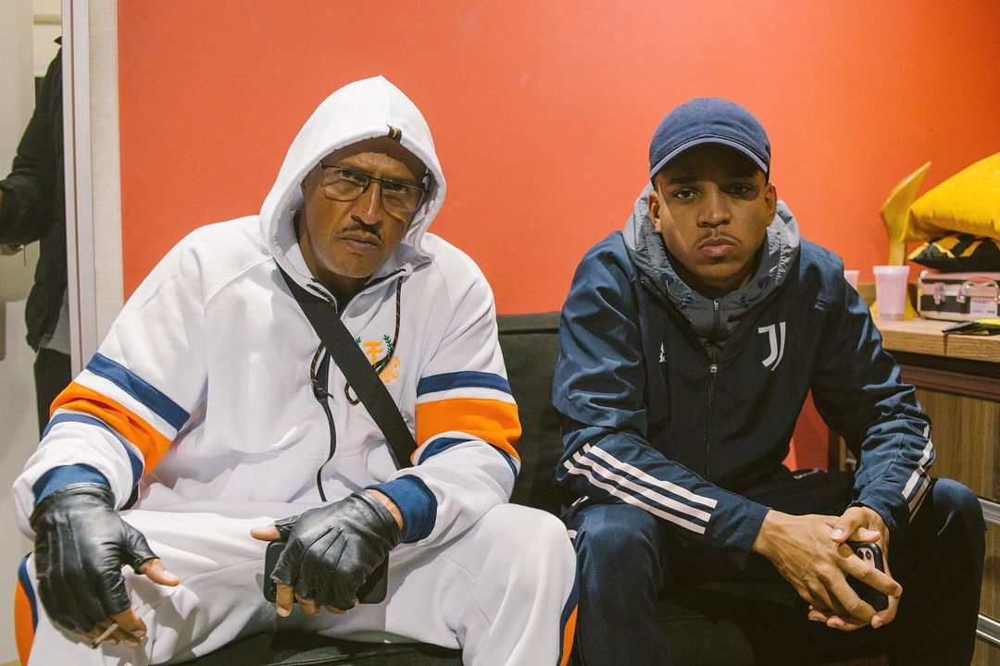

Introdução
Os beats de música são a base rítmica de uma canção. Eles são criados por produtores musicais usando uma variedade de técnicas e ferramentas.
Máquinas de bateria
As máquinas de bateria são dispositivos eletrônicos que permitem aos produtores criar padrões de bateria personalizados.
Sampling
O sampling é a técnica de usar trechos de áudio de outras canções ou fontes para criar um novo som.
Sequenciamento
O sequenciamento é o processo de organizar os padrões de bateria e os samples em uma estrutura de canção.
Melhores beatmaker
Nagali he sent me the magic, metroo, kl j, é o murilo e o LT, DJ GLENER dj glener, Dj MU540 manda pra ela seu
Cantores que já tiveram participação com esses beatmaker
Kyan, Yunk vino, Mano brown, Future, Don toliver, Travis Scott, Mc Ig
